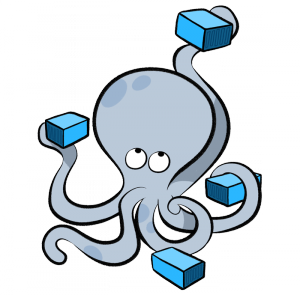

Gerenciando múltiplos containers docker com Docker Compose
Esse artigo tem como objetivo explicar de forma detalhada, e com exemplos, como funciona o processo de gerenciamento de múltiplos containers Docker, pois a medida que sua confiança em utilizar Docker aumenta, sua necessidade de utilizar um maior número de containers ao mesmo tempo cresce na mesma proporção, e seguir a boa prática de manter apenas um serviço por container comumente resulta em alguma demanda extra.

Geralmente com o aumento do número de containers em execução, fica evidente a necessidade de um melhor gerenciamento da sua comunicação, pois é ideal que os serviços consigam trocar dados entre os containers quando necessário, ou seja, você precisa lidar com a rede desse novo ambiente.
Imagine o trabalho que seria executar algumas dezenas de containers manualmente na linha de comando, um por um e todos seus parâmetros necessários, suas configurações de rede entre containers, volumes e afins. Pode parar de imaginar, pois isso não será mais necessário. Para atender essa demanda de gerenciamento de múltiplos containers a solução é o Docker Compose.
Docker compose é uma ferramenta para definição e execução de múltiplos containers Docker. Com ela é possível configurar todos os parâmetros necessários para executar cada container a partir de um arquivo de definição. Dentro desse arquivo, definimos cada container como serviço, ou seja, sempre que esse texto citar serviço de agora em diante, imagine que é a definição que será usada para iniciar um container, tal como portas expostas, variáveis de ambiente e afins.
Com o Docker Compose podemos também especificar quais volumes e rede serão criados para serem utilizados nos parâmetros dos serviços, ou seja, isso quer dizer que não preciso criá-los manualmente para que os serviços utilizem recursos adicionais de rede e volume.
O arquivo de definição do Docker Compose é o local onde é especificado todo o ambiente (rede, volume e serviços), ele é escrito seguindo o formato YAML. Esse arquivo por padrão tem como nome docker-compose.yml.
Anatomia do docker-compose.yml
O padrão YAML utiliza a indentação como separador dos blocos de códigos das definições, por conta disso o uso da indentação é um fator muito importante, ou seja, caso não a utilize corretamente, o docker-compose falhará em sua execução.
Cada linha desse arquivo pode ser definida com uma chave valor ou uma lista. Vamos aos exemplos pra ficar mais claro a explicação:
version: '2'
services:
web:
build: .
context: ./dir
dockerfile: Dockerfile-alternate
args:
versao: 1
ports:
- "5000:5000"
redis:
image: redis
No arquivo acima temos a primeira linha que define a versão do docker-compose.yml, que no nosso caso usaremos a versão mais atual do momento, caso tenha interesse em saber a diferença entre as versões possíveis, veja esse link.
version: '2'
No mesmo nível de indentação temos services, que define o início do bloco de serviços que serão definidos logo abaixo.
version: '2'
services:
No segundo nível de indentação (aqui feito com dois espaços) temos o nome do primeiro serviço desse arquivo, que recebe o nome de web. Ele abre o bloco de definições do serviço, ou seja, a partir do próximo nível de indentação, tudo que for definido faz parte desse serviço.
version: '2'
services:
web:
No próximo nível de indentação (feito novamente com mais dois espaços) temos a primeira definição do serviço web, que nesse caso é o build que informa que esse serviço será criado não a partir de uma imagem pronta, mas que será necessário construir sua imagem antes de sua execução. Seria o equivalente ao comando docker build. Ele também abre um novo bloco de código para parametrizar o funcionamento dessa construção da imagem.
version: '2'
services:
web:
build: .
No próximo nível de indentação (feito novamente com mais dois espaços) temos um parâmetro do build, que nesse caso é o context. Ele é responsável por informar qual contexto de arquivos será usado para construir a imagem em questão, ou seja, apenas arquivos existentes dentro dessa pasta poderão ser usados na construção da imagem. O contexto escolhido foi o “./dir”, ou seja, isso indica que uma pasta chamada dir, que se encontra no mesmo nível de sistema de arquivo do docker-compose.yml ou do lugar onde esse comando será executado, será usada como contexto da criação dessa imagem. Quando logo após da chave um valor é fornecido, isso indica que nenhum bloco de código será aberto.
build: .
context: ./dir
No mesmo nível de indentação da definição context, ou seja, ainda dentro do bloco de definição do build, temos o dockerfile, ele indica o nome do arquivo que será usado para construção da imagem em questão. Seria o equivalente ao parâmetro “-f” do comando docker build. Caso essa definição não existisse, o docker-compose procuraria por padrão por um arquivo chamado Dockerfile dentro da pasta informada no context.
build: .
context: ./dir
dockerfile: Dockerfile-alternate
No mesmo nível de indentação da definição dockerfile, ou seja, ainda dentro do bloco de definição do build, temos o args, ele define os argumentos que serão usados pelo Dockerfile, seria o equivalente ao parâmetro “–build-args” do comando docker build. Como não foi informado o seu valor na mesma linha, fica evidente que ela abre um novo bloco de código.
No próximo nível de indentação (feito novamente com mais dois espaços) temos a chave “versao” e o valor “1”, ou seja, como essa definição faz parte do bloco de código args, essa chave valor é o único argumento que será passado para o Dockerfile, ou seja, o arquivo Dockerfile em questão deverá estar preparado para receber esse argumento ou ele se perderá na construção da imagem.
build: .
context: ./dir
dockerfile: Dockerfile-alternate
args:
versao: 1
Voltando dois níveis de indentação (quatro espaços a menos em relação a linha anterior) temos a definição ports, que seria o equivalente ao parâmetro “-p” do comando docker container run. Ele define qual porta do container será exposta no Docker host. Que no nosso caso será a porta 5000 do container, com a 5000 do *Docker host.
web:
build: .
...
ports:
- "5000:5000"
Voltando um nível de indentação (dois espaços a menos em relação a linha anterior) saímos do bloco de código do serviço web, isso indica que nenhuma definição informada nessa linha será aplicada a esse serviço, ou seja, precisamos iniciar um bloco de código de um serviço novo, que no nosso caso será com nome de redis.
redis:
image: redis
No próximo nível de indentação (feito novamente com mais dois espaços) temos a primeira definição do serviço redis, que nesse caso é o image que é responsável por informar qual imagem será usada para iniciar esse container. Essa imagem será obtida do repositório configurado no Docker host, que por padrão é o hub.docker.com.
Executando o docker compose
Após entender e criar seu próprio arquivo de definição precisamos saber como gerenciá-lo e para isso utilizaremos o binário docker-compose, que entre várias opções de uso temos as seguintes mais comuns:
- build : Usada para construir todas as imagens dos serviços que estão descritos com a definição build em seu bloco de código.
- up : Iniciar todos os serviços que estão no arquivo docker-compose.yml
- stop : Parar todos os serviços que estão no arquivo docker-compose.yml
- ps : Listar todos os serviços que foram iniciados a partir do arquivo docker-compose.yml
Para outras opções visite sua documentação.